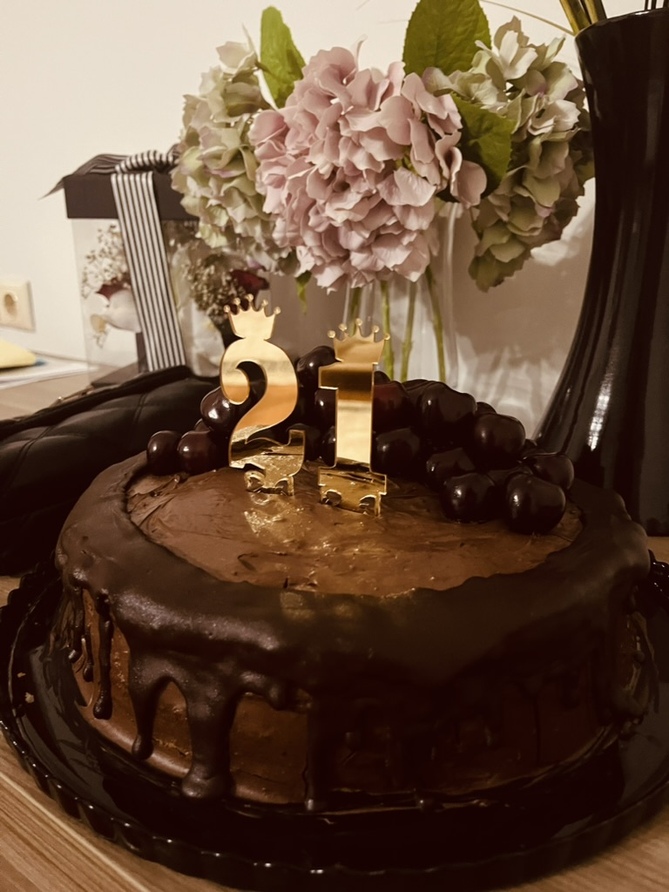
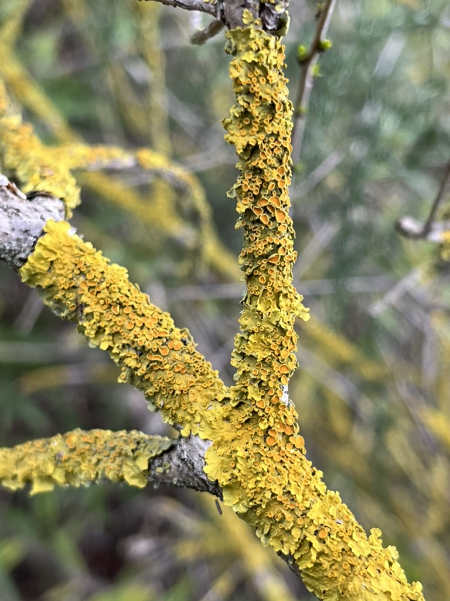
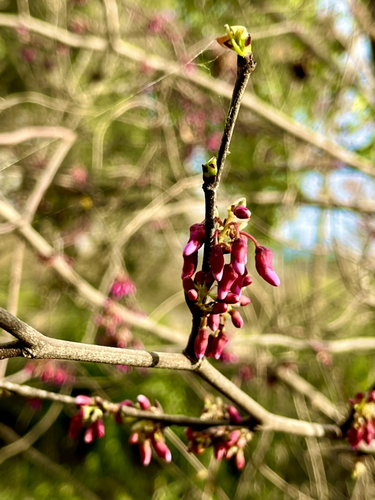
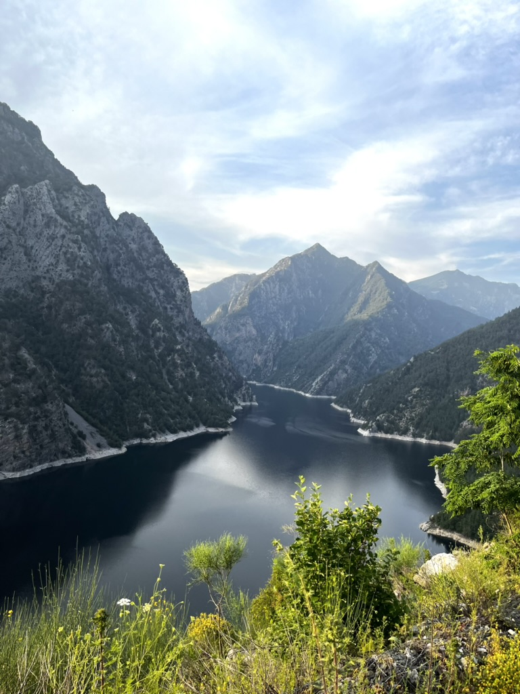
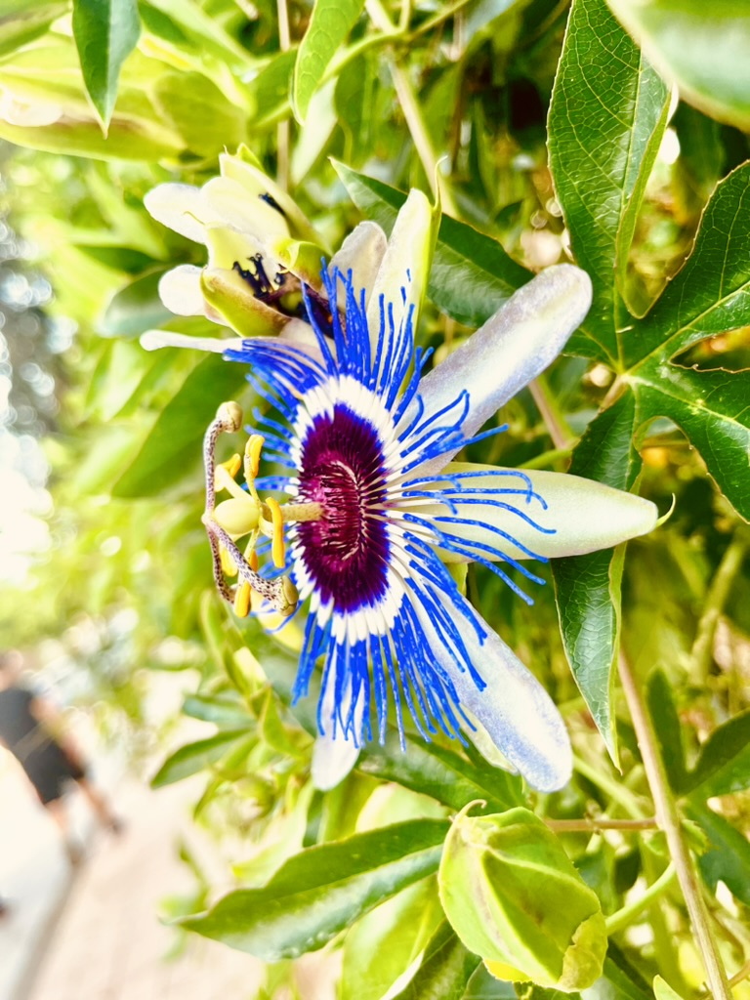

Hobilerim
- Pasta Yapmak
- Farklı görünüşlere sahip pastalar yapmayı çok eğlenceli buluyorum ve yakınlarımın doğum günleri için onlara göre özelleştirilmiş pastalar yaptığımda iyi hissediyorum çünkü insanları mutlu etmeyi seviyorum. Kendi doğum günüm için yaptığım bir pastayı da görmeniz için fotoğrafını buraya ekliyorum.

- Fotoğraf Çekmek
Fotoğraf çekmeyi ise şu yüzden seviyorum, gördüğüm güzellikleri, ya da bana farklı gelen görüntüleri ölümsüzlüştürmeyi seviyorum. Ek olarak en güzel anı biriktirme yollarından birisi fotoğraf çekmektir.



İlgi Alanlarım
-
Doğa ve bitkiler
Doğada bulunlan bitkilere ve çiçeklere ayrı olarak ilgi duyuyorum, farklı türdeki çiçeklerin bitkilerin görünüşleri yaşayış şekilleri ve bulunduğu coğrafyaya göre adaptasyon geçirmesi bana incelemeye değer olduklarını gösteriyor. İşte çektiğim birkaç çiçek fotoğrafı


Anasayfaya dönmek için tıklayınız.